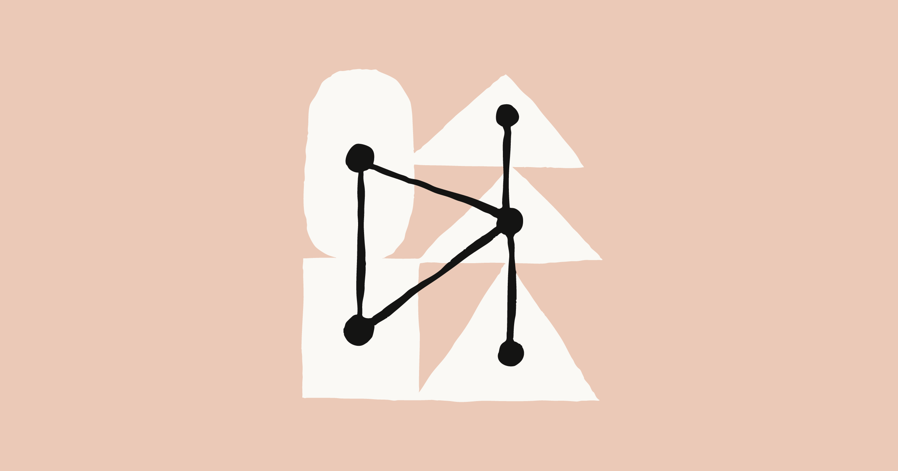

01 · GLOBAL
앱 안에서 Claude 사용료를 연결 결제로
API → 연결 결제
Anthropic은 사용자가 OAuth로 Claude 조직을 앱에 연결하고, 요청별로 앱 또는 고객 조직이 비용을 부담하는 베타를 공개했다. 고객은 지출 한도를 설정하고 언제든 연결을 해제할 수 있으며, API 키를 앱에 공유할 필요가 없다.
Claude Platform 공식 문서 ↗ADDIT INSIGHT
결제 분리는 곧 권한 분리다. 비용 주체·데이터 처리 주체·해지 조건을 하나의 운영 정책으로 정의해야 한다.